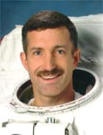

Lyndon B. Johnson Space Center
Houston, Texas 77058
|
National Aeronautics and Space Administration Lyndon B. Johnson Space Center Houston, Texas 77058 |
 |
Biographical Data |
||
Daniel C. Burbank (CAPTAIN, USCG, RET.)
NASA Astronaut
PERSONAL DATA: Born July 27, 1961, in Manchester, Connecticut, but considers Yarmouthport, Massachusetts, to be his home. Married, with two children. Enjoys running, skiing, hiking, sailing, amateur astronomy and playing guitar. His parents, Dan and Joan Burbank, reside in Tolland, Connecticut.
EDUCATION: Graduated from Tolland High School, Tolland, Connecticut, in 1979. Received a Bachelor of Science degree in Electrical Engineering from the U.S. Coast Guard Academy in 1985 and a Master of Science degree in Aeronautical Science from Embry‑Riddle Aeronautical University in 1990.
ORGANIZATIONS: American Institute of Aeronautics and Astronautics, Association of Space Explorers, National Space Society, Order of Daedalians, U.S. Coast Guard Pterodactyls, U.S. Coast Guard Academy Alumni Association
AWARDS: NASA Distinguished Service Medal, NASA Exceptional Service Medal, NASA Spaceflight Medals (three), Defense Superior Service Medals (two), Legion of Merit, Air Medal, Coast Guard Commendation Medals (two), Coast Guard Achievement Medal and various other service awards
EXPERIENCE: Burbank received his commission from the U.S. Coast Guard Academy in May 1985 and was assigned to the Coast Guard Cutter Gallatin (WHEC 721) as Deck Watch Officer and Law Enforcement/Boarding Officer. After attending naval flight training in Pensacola, Florida, he was assigned to Coast Guard Air Station Elizabeth City, North Carolina, where he became an Aircraft Commander in the HH-3F Pelican and then Aircraft Commander/Instructor Pilot in the HH-60J Jayhawk. In July 1992, Burbank was assigned to Coast Guard Air Station Cape Cod, Massachusetts, as Rotary Wing Engineering Officer and HH-60J Aircraft Commander/Instructor Pilot. In May 1995, he was assigned to Coast Guard Air Station Sitka, Alaska, as the Aeronautical Engineering Officer and HH-60J Aircraft Commander. Burbank has logged more than 4,000 flight hours, primarily in Coast Guard helicopters, and flown more than 2,000 missions, including more than 300 search and rescue missions.
NASA EXPERIENCE: Selected by NASA in April 1996, Burbank reported to the Johnson Space Center in August 1996. He worked technical assignments in the Astronaut Office Operations Planning branch and International Space Station branch and served as Capsule Communicator (CAPCOM) for both space shuttle and station missions. He was also a member of the Space Shuttle Cockpit Avionics Upgrade design team. From January 2007 to December 2009, Burbank served as a Professor of Engineering at the U.S. Coast Guard Academy, where he taught Astronomy, Aerodynamics and Statics & Engineering Design.
SPACEFLIGHT EXPERIENCE: Served as Mission Specialist on STS-106 and STS-115, Flight Engineer on Expedition 29 and Commander of Expedition 30. He has logged 188 days in space and 7 hours and 11 minutes of spacewalk time.
STS-106 Atlantis (September 2000) International Space Station assembly mission. During the 12-day mission, the crew prepared the station for the arrival of the first permanent expedition crew, delivering more than three tons of supplies and installing batteries, power converters, oxygen generation equipment and a treadmill on the station.
STS-115 Atlantis (September 2006) International Space Station assembly mission. During the 12-day mission, the crew delivered and installed the P3/P4 truss and solar arrays that provide about one fourth of the station’s electrical power. Burbank performed a spacewalk to complete truss installation, activate the solar alpha rotary joint and enable the solar array deployment.
International Space Station Expedition 29/30 (November 2011 to April 2012). With his crewmates, Russian Space Agency cosmonauts Anton Shkaplerov and Anatoly Ivanishin, Burbank launched from the Baikonur Cosmodrome in Kazakhstan on November 14, 2011, aboard the Soyuz TMA-22 and docked to the station on November 16, 2011. They landed their Soyuz spacecraft in Kazakhstan on April 27, 2012. During their 163 days aboard the station, the crew completed dozens of repairs and enhancements to the station’s systems, including 23 major hardware upgrades and six major software upgrades to the command and data handling system; conducted a spacewalk to relocate an external cargo boom and install external payloads; docked and undocked five visiting spacecraft and completed a record number of hours of science research involving nearly 200 experiments, including research in human physiology, fluid and combustion physics, Earth and space science and technology development.
SEPTEMBER 2012